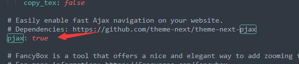
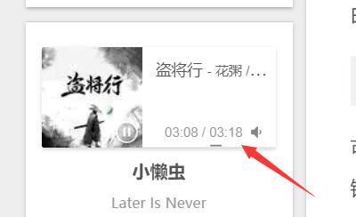

博客优化：添加音乐
自己的博客，搭配上自己的歌单，写起来才更方松。配置过程比较简单，在博客页面中添加Metingjs代码，接着填入歌单信息就行。
- 扩展侧边栏代码，添加QQ音乐
前言：
我所使用的next的版本8.8.1。
新版本的next配置文件在
/source/hexo-theme-next/_config.yml旧版本的next配置文件在``/themes/next/_config.yml`
hexo5.0版本可以定义配置文件在
/_config.next.yml
获取歌单信息
将自己的想添加的歌单分享出去，然后在浏览器上打开，其中的一串数，或者是id=，就是要获得信息。
添加音乐代码
从Hexo博客设置背景音乐_Z先森9701的博客-CSDN博客受到的启发，但由于是对源码进行修改，如果更新版本，则会产生代码冲突。因此最好是使用拓展的方式完成功能。
修改主题配置文件
打开/_config.next.yml文件：(旧版本在/themes/next/_config.yml)
1 | custom_file_path: |
新建sidebar.njk文件
新建/source/_data/sidebar.njk文件，并添加如下代码：
1 | <!-- require APlayer --> |
代码的具体含义可以参照官方文档：APlayer，MetingJS。
其中server,type,id,需要修改，我这里使用的是QQ音乐的歌单
实现全局播放
但测试next8.8.0之后不用，如果不行，可以接着向下看：
修改主题配置文件
打开/_config.next.yml文件：(旧版本在/themes/next/_config.yml)
1 | custom_file_path: |
新建head.njk文件
新建/source/_data/head.njk文件，并添加如下代码：
1 | <!--pjax：防止跳转页面音乐暂停--> |
打开/_config.next.yml文件中找到pjax，将它设置为true：(旧版本在/themes/next/_config.yml)

后面就可以通过hexo命令生成界面了。
